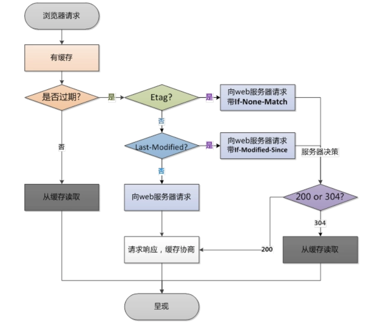

- 《高性能网站建设指南》 - 《高性能网站建设进阶指南》 <center> <img src="./imgs/技术元素.png" height="280"/> </center> **前端工程化** web 应用复杂度的增加，特别是单页面应用[SPA](https://baike.baidu.com/item/SPA/17536313?fr=aladdin)的风靡。组件化，工程化，自动化成了前端发展的趋势。或者说一线的互联网公司就是这么做的。 每个前端团队都在打造自己的前端开发体系，这通常是一个东拼西凑，逐渐磨合的过程，在技术发展日新月异的今天，这样的过程真的是不可抽象和复制的么？通过拆解前端开发体系,对前端工程化有所理解。 **前端是一种技术问题较少、工程问题较多的软件开发领域。** --- <!-- markdown-to-slides index.md -o index.html -s slide.css --> ## I. 前端工程化 > 前端工程本质上是软件工程的一种。软件工程化关注的是性能、稳定性、可用性、可维护性等方面，注重基本的开发效率、运行效率的同时，思考维护效率。一切以这些为目标的工作都是"前端工程化"。 ### 前端工程化面临的问题： #### （一）开发 大体量：多功能、多页面、多状态、多系统； 大规模：多人甚至多团队合作开发； - 提高开发生产效率 - 降低维护难度 这两个问题的解决方案有两点： - 制定开发规范，提高团队协作能力； - 分治。软件工程中有个很重要的概念叫做模块化开发其中心思想就是分治。 --- #### （二）部署 从部署角度，要解决的问题主要是资源管理，包括： - 代码审查 eslint codereview - 压缩打包 Gzip - 增量更新 - 单元测试 [jest / Mocha ](https://cn.vuejs.org/v2/guide/unit-testing.html) #### （三）高性能 CDN 部署、缓存控制、文件指纹、缓存复用、请求合并、按需加载、同步/异步加载、移动端首屏 CSS 内嵌、HTTP 2.0 服务端资源推送。 --- ### 前端工程化 #### 1.规范化 规范化其实是工程化中很重要的一个部分，项目初期规范制定的好坏会直接影响到后期的开发质量。 - 目录结构的指定 - 开发规范的目的是统一团队成员的编码规范，便于团队协作和代码维护。开发规范没有统一的标准，每个团队可以建立自己的一套规范体系。 Javascript Airbnb 开发规范 https://github.com/airbnb/javascript - 前后端接口规范 - 文档规范 readme changelog - Git 分支管理 - Commit 描述规范 - 定期 CodeReview --- #### 2.模块化&组件化 组件（component）和模块（module）应该是两个不同的概念。两者的区别主要在颗粒度方面 用通俗的话讲，模块可以理解为零件，比如轮胎上的螺丝钉；而组件则是轮胎，是具备某项完整功能的一个整体。具体到前端领域，一个 button 是一个模块，一个包括多个 button 的 nav 是一个组件。 **模块/组件化开发的必要性** 随着 web 应用规模越来越大，模块/组件化开发的需求就显得越来越迫切。模块/组件化开发的核心思想是分治，主要针对的是开发和维护阶段。 1. Web 应用的组件化开发。http://blog.jobbole.com/56161/ 2. 前端组件化开发实践。http://web.jobbole.com/82689/ 3. 大规模的前端组件化与模块化。http://www.infoq.com/cn/news/2014/04/front-end-modular --- #### 3.组件仓库 云物理机部门前端组件工具库：@jd/cloudid_frontend http://npm.m.jd.com/package/@jd/cloudid_frontend 为什么搭建私有组件库 - 可复用 跨项目可以使用同一套私有组件库 - 方便维护 如需组件调整 只需要修改组件库 不需要跨项目重复修改 添加新组件原则 - 件应先存在于具体项目中，经过重复验证后再抽象、沉淀到本组件库中 - Vue component 只应负责渲染数据和内部逻辑，尽可能不包含 \$t 国际化、ajax 请求等业务数据和逻辑 - 组件和其他模块应尽可能的搭配单元测试、可运行的 storybook 例子 - 应该在 CHANGELOG 中记录每次增删改的组件信息等 --- #### 4.性能优化 由“增量”原则引申出的前端优化技巧几乎成为了性能优化的核心。 > 有加载相关的按需加载、延迟加载、预加载、请求合并等策略； > 有缓存相关的浏览器缓存利用，缓存更新、缓存共享、非覆盖式发布等方案 | 优化方向 | 优化手段 | | -------- | ------------------------------------------------------------------------------------------------ | | 请求数量 | 合并脚本和样式表，CSS Sprites，拆分初始化负载，划分主域 | | 请求带宽 | 开启 GZip，精简 JavaScript，移除重复脚本，图像优化 | | 缓存利用 | 使用 CDN，使用外部 JavaScript 和 CSS，添加 Expires 头， 减少 DNS 查找，配置 ETag，使 AjaX 可缓存 | | 页面结构 | 将样式表放在顶部，将脚本放在底部，尽早刷新文档的输出 | --- #### 5.自动化 - 自动化构建 - 自动化部署 - 自动化测试 - 自动化生成文档 --- ## II. 工程化具体方法 ### 4.性能优化 浏览器缓存是 Web 性能优化的重要方式。那么浏览器缓存的过程究竟是怎么样的呢？ 浏览器缓存主要分为强强缓存（也称本地缓存）和协商缓存（也称弱缓存）。 #### 强缓存 - Expires 是 http1.0 的规范，它的值是一个绝对时间的 GMT 格式的时间字符串。如我现在这个网页的 Expires 值是：expires:Fri, 14 Apr 2017 10:47:02 GMT。这个时间代表这这个资源的失效时间，只要发送请求时间是在 Expires 之前，那么本地缓存始终有效，则在缓存中读取数据。所以这种方式有一个明显的缺点，由于失效的时间是一个绝对时间，所以当服务器与客户端时间偏差较大时，就会导致缓存混乱。如果同时出现 Cache-Control:max-age 和 Expires，那么 max-age 优先级更高。 --- - Cache-Control 是在 http1.1 中出现的，主要是利用该字段的 max-age 值来进行判断，它是一个相对时间，例如 Cache-Control:max-age=3600，代表着资源的有效期是 3600 秒。cache-control 除了该字段外，还有下面几个比较常用的设置值： no-cache：不使用本地缓存。需要使用缓存协商，先与服务器确认返回的响应是否被更改，如果之前的响应中存在 ETag，那么请求的时候会与服务端验证，如果资源未被更改，则可以避免重新下载。 no-store：直接禁止游览器缓存数据，每次用户请求该资源，都会向服务器发送一个请求，每次都会下载完整的资源。 public：可以被所有的用户缓存，包括终端用户和 CDN 等中间代理服务器。 private：只能被终端用户的浏览器缓存，不允许 CDN 等中继缓存服务器对其缓存。 Cache-Control 与 Expires 可以在服务端配置同时启用，同时启用的时候 Cache-Control 优先级高。 --- #### 弱缓存/协商缓存 **Etag 和 If-None-Match** Etag/If-None-Match 返回的是一个校验码。ETag 可以保证每一个资源是唯一的，资源变化都会导致 ETag 变化。服务器根据浏览器上送的 If-None-Match 值来判断是否命中缓存 与 Last-Modified 不一样的是，当服务器返回 304 Not Modified 的响应时，由于 ETag 重新生成过，response header 中还会把这个 ETag 返回，即使这个 ETag 跟之前的没有变化。 **Last-Modify/If-Modify-Since** 浏览器第一次请求一个资源的时候，服务器返回的 header 中会加上 Last-Modify，Last-modify 是一个时间标识该资源的最后修改时间，例如 Last-Modify: Thu,31 Dec 2037 23:59:59 GMT。 当浏览器再次请求该资源时，request 的请求头中会包含 If-Modify-Since，该值为缓存之前返回的 Last-Modify。服务器收到 If-Modify-Since 后，根据资源的最后修改时间判断是否命中缓存。 如果命中缓存，则返回 304，并且不会返回资源内容，并且不会返回 Last-Modify。 Last-Modified 与 ETag 是可以一起使用的，服务器会优先验证 ETag --- <center>  </center> --- <center> </center> #### 访问量和性能指标 a.css 的请求，如果每次用户访问页面都要加载，很影响性能，很浪费带宽 <center> </center> --- 利用 304，让浏览器使用本地缓存。304 叫协商缓存，这玩意还是要和服务器通信一次，我们的优化级别是变态级，所以必须彻底灭掉这个请求，变成这样： <center> </center> 强制浏览器使用本地缓存（cache-control/expires），不要和服务器通信。好了，请求方面的优化已经达到变态级别，那问题来了：你都不让浏览器发资源请求了，这缓存咋更新？ 很好，相信有人想到了办法：通过更新页面中引用的资源路径，让浏览器主动放弃缓存，加载新资源。好像这样： <center> </center> --- 页面引用了 3 个 css，而某次上线只改了其中的 a.css，如果所有链接都更新版本，就会导致 b.css，c.css 的缓存也失效，那岂不是又有浪费了？！ <center> <img src="./imgs/5.png" height="200"/> </center> 重新开启变态模式，我们不难发现，要解决这种问题，必须让 url 的修改与文件内容关联，也就是说，只有文件内容变化，才会导致相应 url 的变更，从而实现文件级别的精确缓存控制。 什么东西与文件内容相关呢？我们会很自然的联想到利用 数据摘要算法 对文件求摘要信息，摘要信息与文件内容一一对应，就有了一种可以精确到单个文件粒度的缓存控制依据了。好了，我们把 url 改成带摘要信息的： --- <center> </center> 现代互联网企业，为了进一步提升网站性能，会把静态资源和动态网页分集群部署，静态资源会被部署到 CDN 节点上，网页中引用的资源也会变成对应的部署路径： <center> </center> --- 这次发布，同时改了页面结构和样式，也更新了静态资源对应的 url 地址，现在要发布代码上线，亲爱的前端研发同学，你来告诉我，咱们是先上线页面，还是先上线静态资源？ <center> </center> - **先部署页面，再部署资源**：在二者部署的时间间隔内，如果有用户访问页面，就会在新的页面结构中加载旧的资源，并且把这个旧版本的资源当做新版本缓存起来，其结果就是：用户访问到了一个样式错乱的页面，除非手动刷新，否则在资源缓存过期之前，页面会一直执行错误。 - **先部署资源，再部署页面**：在部署时间间隔之内，有旧版本资源本地缓存的用户访问网站，由于请求的页面是旧版本的，资源引用没有改变，浏览器将直接使用本地缓存，这种情况下页面展现正常；但没有本地缓存或者缓存过期的用户访问网站，就会出现旧版本页面加载新版本资源的情况，导致页面执行错误，但当页面完成部署，这部分用户再次访问页面又会恢复正常了。 --- 好的，上面一坨分析想说的就是：先部署谁都不成！都会导致部署过程中发生页面错乱的问题。所以，访问量不大的项目，可以让研发同学苦逼一把，等到半夜偷偷上线，先上静态资源，再部署页面，看起来问题少一些。 有些公司超变态，没有这样的“绝对低峰期”，只有“相对低峰期”。So，为了稳定的服务，还得继续追求极致啊！ 这个奇葩问题，起源于资源的 **覆盖式发布**，用 待发布资源 覆盖 已发布资源，就有这种问题。解决它也好办，就是实现 **非覆盖式发布**。 <center> </center> 看上图，用文件的摘要信息来对资源文件进行重命名，把摘要信息放到资源文件发布路径中，这样，内容有修改的资源就变成了一个新的文件发布到线上，不会覆盖已有的资源文件。上线过程中，先全量部署静态资源，再灰度部署页面，整个问题就比较完美的解决了。 --- 所以，静态资源优化方案，基本上要实现这么几个东西： - 配置超长时间的本地缓存 —— 节省带宽，提高性能 - 采用内容摘要作为缓存更新依据 —— 精确的缓存控制 - 静态资源 CDN 部署 —— 优化网络请求 - 更资源发布路径实现非覆盖式发布 —— 平滑升级 > 总之，前端性能优化绝逼是一个工程问题！ --- ### 5.自动化 #### webpack 打包 webpack 是一个现代 JavaScript 应用程序的静态模块打包器(module bundler)。当 webpack 处理应用程序时，它会递归地构建一个依赖关系图(dependency graph)，其中包含应用程序需要的每个模块，然后将所有这些模块打包成一个或多个 bundle。 ##### css 指纹 ```js const ExtractTextPlugin = require('extract-text-webpack-plugin') // extract css into its own file new ExtractTextPlugin({ filename: utils.assetsPath('css/[name].[contenthash].css'), allChunks: true }) ``` ##### webpack-dev-server webpack-dev-server 是一个小型的 Node.js Express 服务器,它使用 webpack-dev-middleware 来服务于 webpack 的包,除此自外，它还有一个通过 Sock.js 来连接到服务器的微型运行时. 配置 服务器的 host 端口号 proxy 代理等 --- #### 静态资源部署 CDN CDN[Content Delivery Network] 内容分发网络 主要功能是在不同的地点缓存内容，通过负载均衡技术，将用户的请求定向到最合适的缓存服务器上去获取内容 <center> </center> 总结一下 CDN 的工作原理：通过权威 DNS 服务器来实现最优节点的选择，通过缓存来减少源站的压力。 --- CDN 应用场景： - 静态网页 图片小文件、博客 - 大文件下载 软件下载、视频点播或图片存储网站 - 动态加速 直播网站 - 应用加速 手机 APP 除却 CDN 自身的优势，在前端工程中，将静态文件放到 CDN 上，可以直观地减小资源包大小，同时加快首屏加载。 - 若不使用 CDN，则所有的资源都会被打包到 app.js 和 vendor.js 中，页面需要等到这两个包下载完成才可以显示。 - 若使用 CDN，则可以利用浏览器多线程的优势，同时下载若干静态文件以及剩下的 app.js 和 vendor.js，以此达到加快加载的目的。 --- ##### externals 防止将某些 import 的包(package)打包到 bundle 中，而是在运行时(runtime)再去从外部获取这些扩展依赖(external dependencies)。 ```js externals: { "jquery": 'jQuery', "vue-router":'VueRouter', "vue":'Vue' } ``` 样就剥离了那些不需要改动的依赖模块 [BootCDN](https://www.bootcdn.cn/)稳定、快速、免费的前端开源项目 CDN 加速服务 --- ##### html-webpack-plugin html-webpack-plugin 是 webpack 的一个插件，可以动态的创建和编辑 html 内容，在 html 中使用 EJS 语法可以读取到配置中的参数，简化了 html 文件的构建。 EJS 高效的 JavaScript 模板引擎。 https://ejs.bootcss.com/ ```html <% if (user) { %> <h2><%= user.name %></h2> <% } %> ``` ```js plugins: [ // html模板、以及相关配置 new HtmlWebpackPlugin({ title: 'Lesson-06', template: resolve('../public/index.html'), // cdn（自定义属性）加载的资源，不需要手动添加至index.html中, // 顺序按数组索引加载 cdn: { css: ['https://cdn.bootcss.com/element-ui/2.8.2/theme-chalk/index.css'], js: [ 'https://cdn.bootcss.com/vue/2.6.10/vue.min.js', 'https://cdn.bootcss.com/element-ui/2.8.2/index.js' ] } }) ] ``` --- index.html ```html <!DOCTYPE html> <html lang="en"> <head> <meta charset="UTF-8" /> <title><%= htmlWebpackPlugin.options.title %></title> <!-- import cdn css --> <% if(htmlWebpackPlugin.options.cdn) {%> <% for(var css of htmlWebpackPlugin.options.cdn.css) { %> <link rel="stylesheet" href="<%=css%>" /> <% } %> <% } %> </head> <body> <div id="box"></div> <!-- import cdn js --> <% if(htmlWebpackPlugin.options.cdn) {%> <% for(var js of htmlWebpackPlugin.options.cdn.js) { %> <script src="<%=js%>"></script> <% } %> <% } %> </body> </html> ``` --- #### 自动化文档生成 commit message 作用 - 提供更多的历史信息，方便快速浏览 - 过滤某些 commit（比如文档改动），便于快速查找信息 - 直接从 commit 生成 Change log - 可读性好，清晰，不必深入看代码即可了解当前 commit 的作用。 - 为 Code Reviewing（代码审查）做准备 - 方便跟踪工程历史 - 提高项目的整体质量，提高个人工程素质 目前，社区有多种 Commit message 的写法规范，我们介绍的工具是 commitizen，它使用的是 Angular 规范[AngularJS Git Commit Message Conventions](https://docs.google.com/document/d/1QrDFcIiPjSLDn3EL15IJygNPiHORgU1_OOAqWjiDU5Y/edit#heading=h.greljkmo14y0)，这是目前使用最广的写法，并且有对应的工具去生成 change log。 **标准说明** 每次提交， Commit message 都包括 Header, Body 和 Footer 三个部分。 ```js <type>(<scope>): <subject> // 空行 <body> // 空行 <footer> ``` --- **Header** 部分只有一行，包括三个字段：type, scope 和 subject 。 type 用于说明提交的类别，只运行使用下面几种， - feat: 新功能 - fix: 修复 bug - docs: 仅仅修改了文档，比如 README, CHANGELOG, CONTRIBUTE 等等 - style: 格式更新（不影响代码运行的变动） - refactor: 重构（既不是新增功能，又不是 bug 修复） - test: 添加测试 - chore: 构建过程或辅助工具的变动 - perf: 优化相关，比如提升性能、体验 - revert: 回滚到上一个版本 - ci：自动化流程配置修改 如果是 feat 和 fix ，则这个 commit 将肯定出现在 change log 中，其它情况可自行决定是否放入。 scope 用于说明 commit 影响的范围 比如数据层、控制层、视图层等等，视项目不同而不同。 subject 是 commit 目的的简短描述，不超过 50 个字符。 - 以动词开头，使用第一人称现在时，比如 change，而不是 changed 或 changes - 第一个字母小写 - 结尾不要加句号 --- **Body** 部分是对本次 commit 的详细描述，可分成多行。但是一般我都不写。 **Footer** 部分只用于两种情况。 不兼容变动 如果当前代码与上一个版本不兼容，则 Footer 部分以 BREAKING CHANGE 开头，后面是对变动的描述、以及变动理由和迁移方法。 ```bash BREAKING CHANGE: isolate scope bindings definition has changed. To migrate the code follow the example below: Before: scope: { myAttr: 'attribute', } After: scope: { myAttr: '@', } The removed `inject` wasn't generaly useful for directives so there should be no code using it. ``` --- 关闭 Issue 如果当前 commit 针对某个 issue ，那么可以在 Footer 部分关闭这个 issue 。 ```html Closes #1234 ``` ```html Closes #1234, $1235, #1236 ``` **Revert** 如果当前 commit 用于撤销以前的 commit，则必须以 revert:开头，后面跟着被撤销 Commit 的 Header ```html revert: feat(pencil): add 'graphiteWidth' option <br /> This reverts commit 667ecc1654a317a13331b17617d973392f415f02. ``` - Body 部分的格式是固定的，必须写成 This reverts commit .，其中的 hash 是被撤销 commit 的 SHA 标识符。 - 如果当前 commit 与被撤销的 commit，在同一个发布（release）里面，那么它们都不会出现在 Change log 里面。如果两者在不同的发布，那么当前 commit，会出现在 Change log 的 Reverts 小标题下面。 --- ##### 自动生成 changelog 文档 ###### commitizen Commitizen 是一个撰写合格 Commit message 的工具。。 ```bash npm install -g commitizen # 在项目目录里，运行下面的命令，使其支持 Angular 的 Commit message 格式。 commitizen init cz-conventional-changelog --save --save-exact ``` 用 git cz -m 代替 git commit -m 就可以轻松的写出 Angular 规范的 commit message 了。 ###### validate-commit-msg 用于检查 Node 项目的 Commit message 是否符合格式。 ###### conventional-changelog 生成 Change log 的工具，运行下面的命令即可。 ```bash npm install -g conventional-changelog-cli cd my-project conventional-changelog -p angular -i CHANGELOG.md -s ``` --- 如果你的所有 Commit 都符合 Angular 格式，那么发布新版本时， Change log 就可以用脚本自动生成 生成的文档包括以下三个部分。 - New features - Bug fixes - Breaking changes. 每个部分都会罗列相关的 commit ，并且有指向这些 commit 的链接。当然，生成的文档允许手动修改，所以发布前，你还可以添加其他内容。 为了方便使用，可以将其写入 package.json 的 scripts 字段。 ```json { "scripts": { "changelog": "conventional-changelog -p angular -i CHANGELOG.md -w -r 0" } } ``` ```bash npm run changelog ``` --- ### 附：前端埋点 #### 目的 获取用户基本信息、行为以及跟踪产品在用户端的使用情况，并以监控数据为基础，指明产品优化的方向。 #### 前端监控类别 前端监控可以分为三类：数据监控、性能监控和异常监控。 **数据监控**就是监听用户信息和行为，常见的监控项有： - PV(page view 页面访问量)：即页面浏览量或点击量 - UV(unique visitor 独立访客)：指访问某个站点或点击某条新闻的不同 IP 地址的人数 - 用户在每一个页面的停留时间 - 用户通过什么入口来访问该网页 - 用户在相应的页面中触发的行为 统计这些数据是有意义的，比如我们知道了用户来源的渠道，可以促进产品的推广，知道用户在每一个页面停留的时间，可以针对停留较长的页面，增加广告推送等等。 --- **性能监控**指的是监听前端的性能，主要包括监听网页或者说产品在用户端的体验。常见的性能监控项包括： - 不同用户，不同机型和不同系统下的首屏加载时间 - http 等请求的响应时间 - 静态资源整体下载时间 - 页面渲染时间 - 页面交互动画完成时间 这些性能监控的结果，可以展示前端性能的好坏，根据性能监测的结果可以进一步的去优化前端性能，比如兼容低版本浏览器的动画效果，加快首屏加载等等。 --- **异常监控**由于产品的前端代码在执行过程中也会发生异常，因此需要引入异常监控。及时的上报异常情况，可以避免线上故障的发上。虽然大部分异常可以通过 try catch 的方式捕获，但是比如内存泄漏以及其他偶现的异常难以捕获。常见的需要监控的异常包括： - Javascript 的异常监控 - 样式丢失的异常监控 - 服务器请求的异常监控 我们说完了前端监控的三个分类，现在就来聊聊怎么实现前端监控。实现前端监控，第一步肯定是将我们要监控的事项（数据）给收集起来，再提交给后台，最后进行数据分析。数据收集的丰富性和准确性会直接影响到我们做前端监控的质量，因为我们会以此为基础，为产品的未来发展指引方向。 收集监控数据我们是通过前端埋点来实现的，目前常见的前端埋点方法有三种：手动埋点、可视化埋点和无埋点。 --- #### 前端埋点分类 收集监控数据我们是通过前端埋点来实现的，目前常见的前端埋点方法有三种：手动埋点、可视化埋点和无埋点。 **手动埋点，**也叫代码埋点，即纯手动写代码，调用埋点 SDK 的函数，在需要埋点的业务逻辑功能位置调用接口，上报埋点数据，像友盟、百度统计等第三方数据统计服务商大都采用这种方案。 优势: - 可自定义属性，自定义事件 - 可以细化需求 - 相比其他埋点方式减少服务器压力 缺陷: - 工程量大的话，手动埋点会出现疏漏，不方便审查。 - 需求变更要重新埋点，成本高。 - 每次需求变更都要重新发布版本，对线上系统稳定性有一定危害 ```js $(document).ready(() => { // ... 这里是你的业务逻辑代码 sendData(params) //这里是发送你的埋点数据，params是你封装的埋点数据 }) ``` --- 前端框架式手动埋点 如果使用 Vue 或者 React 等前端框架，这些框架都有自己的各种生命周期，为了减少重复性的手动埋点次数，可以在各个生命周期位置，根据你的需求封装你所需的埋点。比如你是 SPA 单页应用，你希望在每一个页面的 componentDidMount 埋点，并由此确定用户已经打开了页面。 css 埋点： ```css .link:active::after { content: url('http://www.example.com?action=yourdata'); } ``` ```html <a class="link">点击我，会发埋点数据</a> ``` --- **可视化埋点**解决了纯手动埋点的开发成本和更新成本，通过可视化工具快速配置采集节点（圈点），在前端自动解析配置，并根据配置上传埋点数据，比起手动埋点看起来更无痕， 比如国外比较早做可视化的是 Mixpanel，国内较早支持可视化埋点的有 TalkingData、诸葛 IO，2017 年腾讯的 MTA 也宣布支持可视化埋点； **无埋点**则是前端自动采集全部事件，上报埋点数据，由后端来过滤和计算出有用的数据。 优点: 前端只要一次加载埋点脚本 缺点: 服务器性能压力山大 采用无埋点技术的有主流的 GrowingIO、神策。 --- ## III. 项目优化 1. 规范项目中 Commit message 2. 项目中 CHANGRLOG.md 自动生成 --- ## VI. 总结 **前端工程化就是用做工程的思维看待和开发自己的项目,而不再是直接撸起袖子一个页面一个页面开写** 在业界内有这么一句话：任何简单机械的重复劳动都应该让机器去完成。现代前端技术不再是以前刀耕火种的年代了。所以前端工程化的很多脏活累活都应该交给自动化工具来完成。 如何选型技术、如何定制规范、如何分治系统、如何优化性能、如何加载资源，当你从切图开始转变为思考这些问题的时候，我想说： 你好，工程师！ <center> </center> --- ### 参考资料 1. [前端工程化](https://blog.csdn.net/yin_you_yu/article/details/80462957) 2. [人们常说的前端工程化到底是什么](https://www.jianshu.com/p/0d0f268ec73d) 3. [大公司里怎样开发和部署前端代码？](https://www.zhihu.com/question/20790576/answer/32602154) 4. [前端埋点的那些事](http://www.imooc.com/article/27151) 5. [小谈前端埋点](https://www.jianshu.com/p/645a26619508) 6. [前端工程——基础篇](https://github.com/fouber/blog/issues/10) 7. [http-proxy-middleware](https://www.jianshu.com/p/a248b146c55a) 8. [Webpack dev server 使用 http-proxy 解决跨域问题](https://www.jianshu.com/p/3bdff821f859) 9. [chimurai/http-proxy-middleware](https://github.com/chimurai/http-proxy-middleware) 10. [详解 webpack-dev-server 的简单使用](https://www.jb51.net/article/137608.htm) 11. [html-webpack-plugin](https://github.com/jantimon/html-webpack-plugin) 12. [webpack 使用 HtmlWebpackPlugin 进行 cdn 配置](https://www.jianshu.com/p/9248db0349fb) 13. [CDN 是什么？使用 CDN 有什么优势？](https://blog.csdn.net/const_ly/article/details/79788728) 14. [webpack4-06-开发、生产环境、动态 CDN 配置](https://www.codercto.com/a/76835.html) 15. [HTTP 强缓存和协商缓存](https://segmentfault.com/a/1190000008956069) 16. [Cache-Control 之 no-cache 和 max-age=0](https://www.jianshu.com/p/1744780ddda0) 17. [Commit message 代码提交规范](https://segmentfault.com/a/1190000019579621) 18. [Commit message 和 Change log 编写指南](http://www.ruanyifeng.com/blog/2016/01/commit_message_change_log.html) 19. [git commit 、CHANGELOG 和版本发布的标准自动化](https://www.cnblogs.com/zivxiaowei/p/10089201.html) <center>-- End --</center>